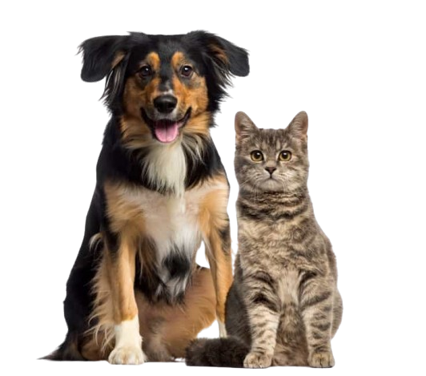

Sobre el proyecto
Este proyecto reúne y organiza información sobre subvenciones relacionadas con el bienestar animal procedentes de la Base de Datos Nacional de Subvenciones (BDNS) y de la Dirección General de Derechos de los Animales (DGDA). El objetivo principal es ofrecer una visión clara, estructurada y accesible de las ayudas concedidas, denegadas o en trámite, facilitando tanto la consulta pública como el análisis técnico.
Conócenos
Subvenciones de Bienestar Animal (2021–2025)
Consulta, filtra y analiza más de 6.000 registros de entidades, importes y líneas de ayuda. Datos procedentes de BDNS y DGDA.
Cargando datos…
Análisis visual
Distribución de solicitudes e importes concedidos por año.